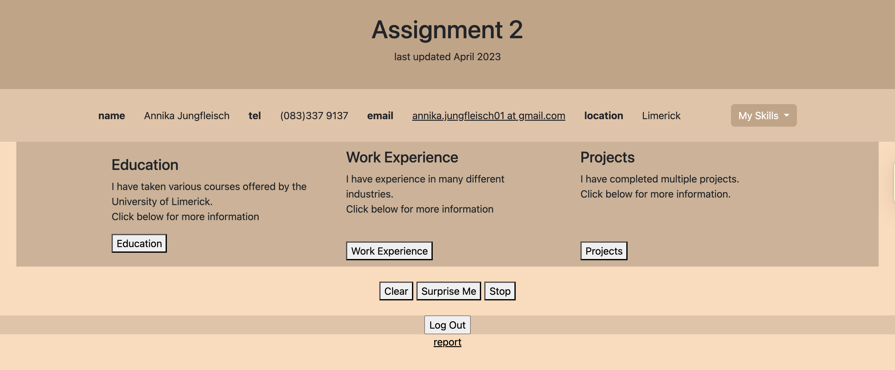

Previous Portfolios
This section showcases earlier iterations of my portfolio, demonstrating my growth and evolving skills in web development. Each project represents a significant learning experience, from foundational web concepts to more dynamic and interactive designs.
Portfolio - July 2023
This version of my portfolio represents a key stage in my development as a designer and creative technologist. It captures a defining moment in my creative journey, showcasing a range of projects—from 3D modeling to UX-focused interfaces and design—while highlighting my technical skills in HTML, CSS, JavaScript, and Bootstrap. Built using HTML5 for semantic structure, CSS3 for responsive styling, and JavaScript for interactivity, the site reflects both my front-end development capabilities and my evolving design sensibility. The portfolio emphasises core principles of interaction design, including intuitive navigation and visual consistency. More than just a collection of projects, this portfolio reflects my personal style, my attention to detail, and my approach to creating thoughtful, engaging UI/UX experiences.

Portfolio Assignment - April 2023
This portfolio was developed as part of my Introduction to Web Development module, serving as a comprehensive assignment to apply learned web development concepts. The website functions as a personal portfolio, featuring sections for my personal information, academic courses, work experiences, and coding projects. Key features include the use of cookies to store user information, dynamic content loading for education, work experience, and project sections via JSON data, and interactive elements such as a surprise project rotator with a stop function. The project also showcases the integration of external resources like Bootstrap for responsive design and various JavaScript libraries for enhanced functionality. This assignment demonstrates my ability to create a structured, interactive, and user-friendly web application.
